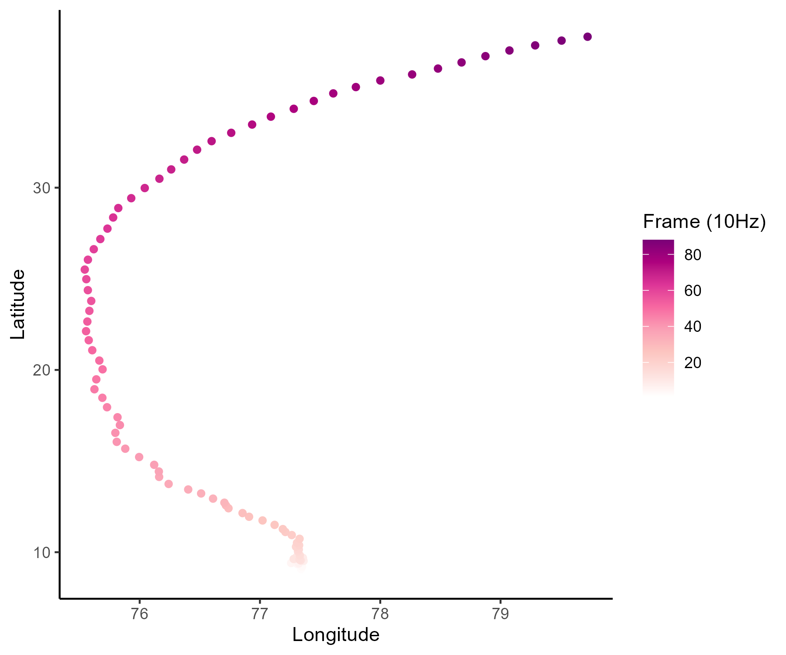
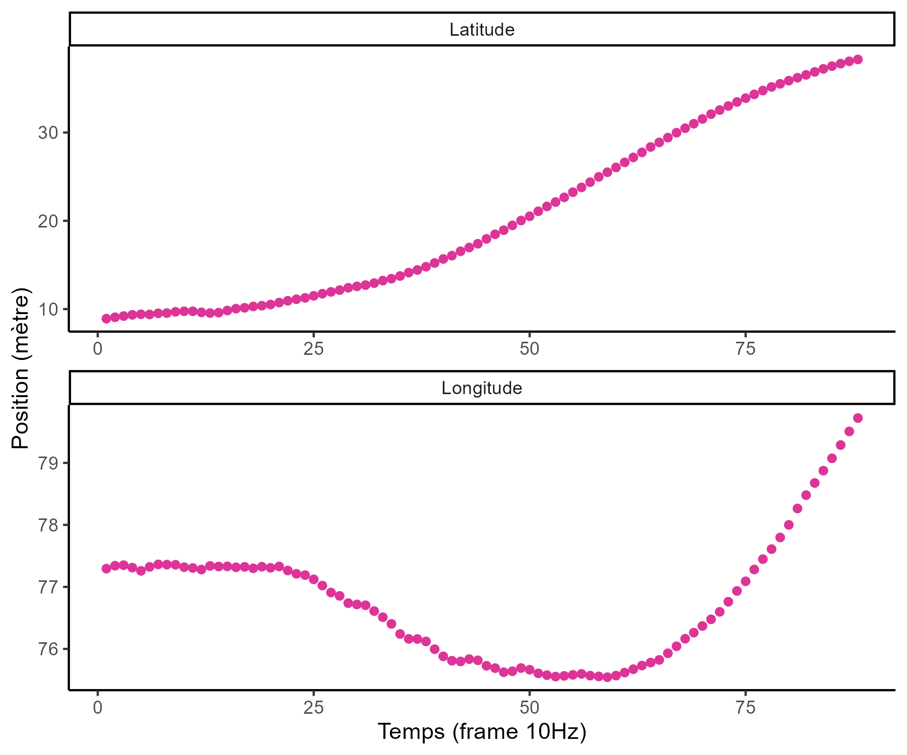
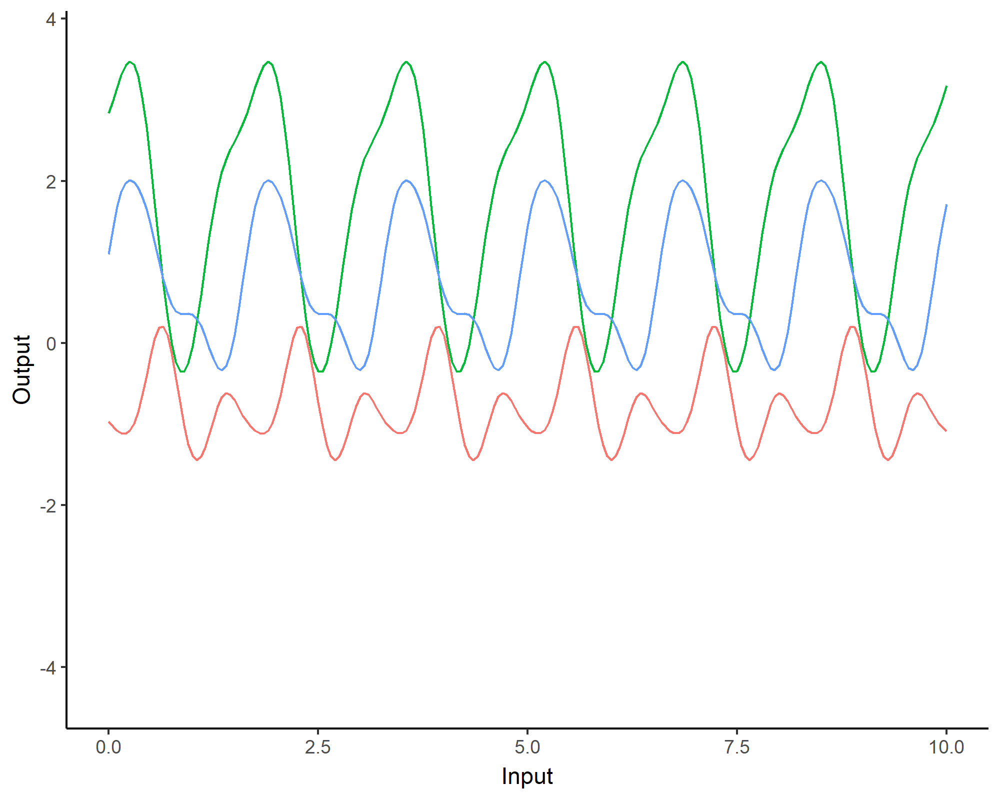
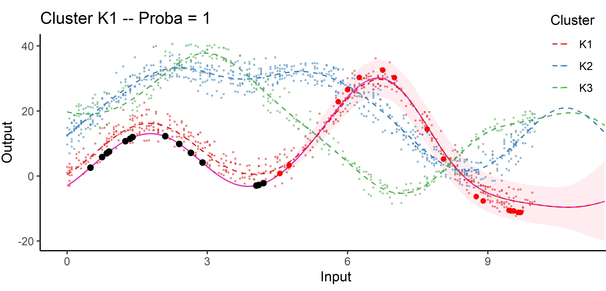
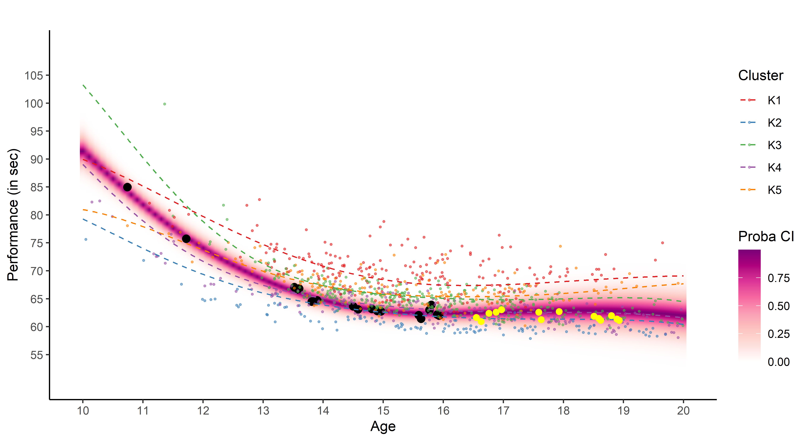

">
Analyse de données fonctionnelles pour des problématiques sportives : spécificités, approches classiques et probabilistes
Arthur Leroy - GABI & MIA Paris Saclay, INRAE

Ateliers Statistique & Sport - 15/10/2025
Can you spot the differences?
Can you spot the differences?

Functional data is all about smoothness and tidiness
Functional data is all about smoothness and tidiness

Functional data in sports ? Time, space and continua
Exemple de données GPS en rugby :
 
Functional data appears more often that we would imagine

Zech et al. - Effects of barefoot and footwear conditions on learning of a dynamic balance task: a randomized controlled study - EJAP - 2018
Hollander et al. - Adaptation of Running Biomechanics to Repeated Barefoot Running: A Randomized Controlled Study - TAJSM - 2019
Like: what would have happened to results without Covid?
Veiga, S., Grenouillat, A., et al. - Ten-Year Evolution of World Swimming Trends for Different Performance Clusters: A Gaussian Model - IJSPP - 2024
Now you know. Functional data > 2020

Let’s start with an easy problem : computing cumulated workload
For discrete time series, we can be interested in tracking the cumulated workload over time. This can be seen as a discrete integral of successive measurements.
Naive approaches can be useful but are often limited
\(ACWR(t) = \dfrac{\bar{L}_{week}(t)}{\sum\limits_{i=0}^{3} \bar{L}_{week}(t - 7i)}\)
\(EWMA(t) = \lambda_N L(t) + (1- \lambda_N) \text{EWMA}(t-1)\)
with: \(\lambda_N = \dfrac{2}{N + 1}\)
EWMA (Exponential Weighted Moving Average) and ACWR (Acute Chronic Workload Ratio) have been proposed to compute cumulated workload, but mathematical problems (sensible to missing data, biased, fixed decreasing behaviour) prevent their direct use in practice.
Practice time!
We can switch to the notebook for the first time and start practicing.

Reconstructing functions from series of points
A function can be expressed as a linear combination of basis functions: \[f(t) = \sum\limits_{b=1}^{B}{\alpha_b \ \phi_b(t)}\]
If we observed the function at \(N\) instants, we can find coefficients \(\boldsymbol{\alpha}\) through least squares:
\[LS(\boldsymbol{\alpha}) = \sum_{i=1}^{N}\left[f(t_i)-\sum_{b = 1}^{B} \alpha_{b} \phi_{b}\left(t_{i}\right)\right]^{2}\]
Functional data analysis is the art of drawing curves from points
Depending on the context, we may expect different properties for our function.

Do we interpolate or smooth? Are the variations periodic (Fourier basis), multi-scale (wavelets) or polynomial (B-splines)? Answers are probably is this book.
Functional Principal Component Analysis (FPCA)
Like for multi-variate statistics, FCPA is central method when studying functions. From the Karhunen-Loève theorem we can express any centred stochastic process as an infinite linear combination of orthonormal eigenfunctions:
\[X(t)-\mathbb{E}[X(t)]=\sum_{q=1}^{\infty} \xi_{q} \varphi_{q}(t)\]
I must admit, it’s a bit trickier to interpret
It’s still used to represent the trajectories explaining the most variance among our functions. Eigenfunctions are uncorrelated, and they provide the most parsimonious decomposition in terms of basis function.
People are doing many (more or less crazy) things, trust me
An important strategy is non-parametric FDA that assumes no finite decomposition and instead defines specific metrics to measure a distance between functions directly.
Longitudinal mixed models are also worth a mention as including time as an input variable (also called fixed effect) in a mixed/hierarchical model proved to be efficient in many applications.
The curse of dimensionality? Don’t care, I’m smooth
One nice and surprising property of FDA methods is that they generally don’t suffer from being infinitely high dimensional. Intuitively, what is the true dimension of this object?
What if I observed multiple functions? Let’s make groups
One classical problem in FDA (and statistics in general) is clustering: allocating functions that seem similar into groups according to some property. There are different strategies:
Modelling functions gives you derivatives to study dynamics
Clustering performance curves of 100m freestyle swimmers into 5 groups using derivatives.
FDA is limited (and it’s kinda old to be fair)

- While average trajectories of groups are reasonable, individual curves may easily diverge,
- Really low predictive capacities,
- No quantification of uncertainty.
Probabilistic modelling and predictions: how do we really learn?

Moving from exploring to learning functions
\[y = \color{orange}{f}(x) + \epsilon\]
where:
- \(x\) is the input variable (typically time, location, any continuum),
- \(y\) is the output variable (typically performance measurements),
- \(\epsilon\) is the noise, a random error term,
- \(\color{orange}{f}\) is a random function encoding the relationship between input and output data.
All supervised learning problems require to retrieve the most reliable function \(\color{orange}{f}\), using observed data \(\{(x_1, y_1), \dots, (x_n, y_n) \}\), to perform predictions when observing new input data \(x_{n+1}\).
Learning the simplest of functions : linear regression
In the simplest (though really common in practice) case of linear regression, we assume that:
\[\color{orange}{f}(x) = a x + b\]
Finding the best function \(\color{orange}{f}\) reduces to compute optimal parameters \(a\) and \(b\) from our dataset.
Learning is about updating our knowledge
This well-known probability formula has massive implications on learning strategies:
\[\mathbb{P}(\color{red}{T} \mid \color{blue}{D}) = \dfrac{\mathbb{P}(\color{blue}{D} \mid \color{red}{T}) \times \mathbb{P}(\color{red}{T})}{\mathbb{P}(\color{blue}{D})}\]
with:
- \(\mathbb{P}(\color{red}{T})\), probability that some theory \(\color{red}{T}\) is true, our prior belief.
- \(\mathbb{P}(\color{blue}{D} \mid \color{red}{T})\), probability to observe this data if theory \(\color{red}{T}\) is true, the likelihood.
- \(\mathbb{P}(\color{blue}{D})\), probability to observe this data overall, often called the evidence.
Bayes’ theorem indicates how to update our beliefs about \(\color{red}{T}\) when accounting for new data \(\color{blue}{D}\) :
- \(\mathbb{P}(\color{red}{T} \mid \color{blue}{D})\), probability that theory \(\color{red}{T}\) is true considering data \(\color{blue}{D}\), our posterior belief.
A visual explanation of Bayes’ theorem
We generally use probability distributions to express our initial uncertainty about a quantity of interest (balance of a coin, average size of a human, …) and its posterior probable values.

Probabilistic estimation can be an alternative to testing

Let’s exercise your Bayesian mind
Assume there exists some trouble or disease such that:
- \(\mathbb{P}(\color{red}{T}) = 0.001,\) 1 person out of 1000 contracted the trouble on average,
- \(\mathbb{P}(\color{blue}{D} \mid \color{red}{T}) = 0.99,\) a detection test is 99% reliable if you have the trouble,
- \(\mathbb{P}(\color{blue}{\bar{D}} \mid \color{red}{\bar{T}}) = 0.99,\) this same detection test is 99% reliable if you don’t have the trouble,
From Bayes’ theorem, the probability to have contracted the trouble when the detection test was positive is:
\[\mathbb{P}(\color{red}{T} \mid \color{blue}{D}) = \dfrac{\mathbb{P}(\color{blue}{D} \mid \color{red}{T}) \times \mathbb{P}(\color{red}{T})}{\mathbb{P}(\color{blue}{D})} = \dfrac{0.99 \times 0.001}{0.99 \times 0.001 + (1-0.99) \times 0.999} \simeq 0.09\]
Hence, we only have 9% chance to actually be sick despite a positive result to the detection test.
Gaussian process: a prior distribution over functions
\[y = \color{orange}{f}(x) + \epsilon\]
No restrictions on \(\color{orange}{f}\) but a prior distribution on a functional space: \(\color{orange}{f} \sim \mathcal{GP}(m(\cdot),C(\cdot,\cdot))\)
We can think of a Gaussian process as the extension to infinity of multivariate Gaussians:
\(x \sim \mathcal{N}(m , \sigma^2)\) in \(\mathbb{R}\), \(\begin{pmatrix}
x_1 \\
x_2 \\
\end{pmatrix} \sim \mathcal{N} \left(
\
\begin{pmatrix}
m_1 \\
m_2 \\
\end{pmatrix},
\begin{bmatrix}
C_{1,1} & C_{1,2} \\
C_{2,1} & C_{2,2}
\end{bmatrix} \right)\) in \(\mathbb{R}^2\)


Credits: Raghavendra Selvan
A GP is like a long cake and each slice is a Gaussian
Credits: Carl Henrik Ek
A GP is like an infinitely long cake and each slice is a Gaussian
Credits: Carl Henrik Ek
Covariance functions: Squared Exponential kernel
While \(m(\cdot)\) is often assumed to be \(0\), the covariance structure is critical and defined through tailored kernels. For instance, the Squared Exponential (or RBF) kernel is expressed as: \[C_{SE}(x, x^{\prime}) = s^2 \exp \Bigg(-\dfrac{(x - x^{\prime})^2}{2 \ell^2}\Bigg)\]

Covariance functions: Periodic kernel
To model phenomenon exhibiting repeting patterns, one can leverage the Periodic kernel: \[C_{perio}(x, x^{\prime}) = s^2 \exp \Bigg(- \dfrac{ 2 \sin^2 \Big(\pi \frac{\mid x - x^{\prime}\mid}{p} \Big)}{\ell^2}\Bigg)\]

Covariance functions: Linear kernel
We can even consider linear regression as a particular GP problem, by using the Linear kernel: \[C_{lin}(x, x^{\prime}) = s_a^2 + s_b^2 (x - c)(x^{\prime} - c )\]

We can learn optimal values of hyper-parameters from data through maximum likelihood.
Gaussian process: all you need is a posterior
The Gaussian property induces that unobserved points have no influence on inference:
\[ \int \underbrace{p(f_{\color{grey}{obs}}, f_{\color{purple}{mis}})}_{\mathcal{GP}(m, C)} \ \mathrm{d}f_{\color{purple}{mis}} = \underbrace{p(f_{\color{grey}{obs}})}_{\mathcal{N}(m_{\color{grey}{obs}}, C_{\color{grey}{obs}})} \]
This crucial trick allows us to learn function properties from finite sets of observations. More generally, Gaussian processes are closed under conditioning and marginalisation.
\[\begin{bmatrix}
f_{\color{grey}{o}} \\
f_{\color{purple}{m}} \\
\end{bmatrix} \sim \mathcal{N} \left(
\begin{bmatrix}
m_{\color{grey}{o}} \\
m_{\color{purple}{m}} \\
\end{bmatrix},
\begin{pmatrix}
C_{\color{grey}{o, o}} & C_{\color{grey}{o}, \color{purple}{m}} \\
C_{\color{purple}{m}, \color{grey}{o}} & C_{\color{purple}{m, m}}
\end{pmatrix} \right)\]
While marginalisation serves for training, conditioning leads the key GP prediction formula:
\[f_{\color{purple}{m}} \mid f_{\color{grey}{o}} \sim \mathcal{N} \Big(
m_{\color{purple}{m}} + C_{\color{purple}{m}, \color{grey}{o}} C_{\color{grey}{o, o}}^{-1} (f_{\color{grey}{o}} - m_{\color{grey}{o}}), \ \ C_{\color{purple}{m, m}} - C_{\color{purple}{m}, \color{grey}{o}} C_{\color{grey}{o, o}}^{-1} C_{\color{grey}{o}, \color{purple}{m}} \Big)\]
A visual explanation of GP regression


Updating our knowledge about functions
Updating our knowledge about functions


Updating our knowledge about functions

Forecasting with a unique GP

Forecasting with a unique GP

Time to fit some GPs!


We will now extensively use the MagmaClustR package for modelling functional data with GPs.
It all starts with observations from multiple sources …
It all starts with observations from multiple sources …
… but sometimes we are not measuring the same things …
… among many other difficulties …

Several classical challenges:
- Irregular measurements (in number of observations and location),
… among many other difficulties …

Several classical challenges:
- Irregular measurements (in number of observations and location),
- Multiple sources of data (athletes, sensors, …)
… or all of them at once!
Multi-Task? Multi-Output? What are the maths behind that?
In the previous examples, we saw a variety of situations that naturally lead to the same mathematical formulation of the learning problem:
\[y_s = \color{orange}{f_s}(x_s) + \epsilon_s, \hspace{3cm} \forall s = 1, \dots, S\]
Learn \(\color{orange}{f_s}\), the underlying relationship between \(x_s\) and \(y_s\), for each source of data \(\color{orange}{s}\).
Multi-, in contrast with single-, regression implies that some information can be shared across data sources to improve learning/predictions.
The nature of measurements leads to a more philosophical distinction:
- Multi-Output clearly refers to several variables of interest. An Output is a quantity we aim to infer/predict from Input measurements, and which may be correlated with others.
- Multi-Task implies the existence of an underlying pattern, shared by several tasks or individuals, which can be jointly exploited to build a common model.
Multi-Task Gaussian Processes
\[y_t = \mu_0 + f_t + \epsilon_t, \hspace{3cm} \forall t = 1, \dots, T\]
with:
- \(\mu_0 \sim \mathcal{GP}(m_0, K_{0}),\)
- \(f_t \sim \mathcal{GP}(0, \Sigma_{\theta_t}), \ \perp \!\!\! \perp_t,\)
- \(\epsilon_t \sim \mathcal{GP}(0, \sigma_t^2), \ \perp \!\!\! \perp_t.\)
It follows that:
\[y_t \mid \mu_0 \sim \mathcal{GP}(\mu_0, \Sigma_{\theta_t} + \sigma_t^2 I), \ \perp \!\!\! \perp_t\]
\(\rightarrow\) Unified GP framework with a shared mean process \(\mu_0\), and task-specific process \(f_t\),
\(\rightarrow\) Naturaly handles irregular grids of input data.
Goal: Learn the hyper-parameters, (and \(\mu_0\)’s hyper-posterior).
Difficulty: The likelihood depends on \(\mu_0\), and tasks are not independent.
Notation and dimensionality
Each task has its specific vector of inputs \(\color{purple}{\textbf{x}_i}\) associated with outputs \(\textbf{y}_i\).
The mean process \(\mu_0\) requires to define pooled vectors and additional notation follows:
- \(\textbf{y} = (\textbf{y}_1,\dots, \textbf{y}_i, \dots, \textbf{y}_M)^T,\)
- \(\color{grey}{\textbf{x}} = (\textbf{x}_1,\dots,\textbf{x}_i, \dots, \textbf{x}_M)^T,\)
- \(\textbf{K}_{0}^{\color{grey}{\textbf{x}}}\): covariance matrix from the process \(\mu_0\) evaluated on \(\color{grey}{\textbf{x}},\)
- \(\boldsymbol{\Sigma}_{\theta_t}^{\color{purple}{\textbf{x}_i}}\): covariance matrix from the process \(f_t\) evaluated on \(\color{purple}{\color{purple}{\textbf{x}_i}},\)
- \(\Theta = \{(\theta_t)_i, \sigma_t^2 \}\): the set of hyper-parameters,
- \(\boldsymbol{\Psi}_{\theta_t, \sigma_t^2}^{\color{purple}{\textbf{x}_i}} = \boldsymbol{\Sigma}_{\theta_t}^{\color{purple}{\textbf{x}_i}} + \sigma_t^2 I_{N_i}\).
While GP are infinite-dimensional objects, a tractable inference on a finite set of observations fully determines the overall properties.
EM algorithm
E-step
\[
\begin{align}
p(\mu_0(\color{grey}{\mathbf{x}}) \mid \textbf{y}, \hat{\Theta})
&\propto \mathcal{N}(\mu_0(\color{grey}{\mathbf{x}}); m_0(\color{grey}{\textbf{x}}), \textbf{K}_{0}^{\color{grey}{\textbf{x}}}) \times \prod\limits_{t =1}^T \mathcal{N}(\mathbf{y}_t; \mu_0( \color{purple}{\textbf{x}_i}), \boldsymbol{\Psi}_{\hat{\theta}_i, \hat{\sigma}_i^2}^{\color{purple}{\textbf{x}_i}}) \\
&= \mathcal{N}(\mu_0(\color{grey}{\mathbf{x}}); \hat{m}_0(\color{grey}{\textbf{x}}), \hat{\textbf{K}}^{\color{grey}{\textbf{x}}}),
\end{align}
\]
- \(\hat{\textbf{K}}^{\color{grey}{\textbf{x}}} = ({\textbf{K}_{0}^{\color{grey}{\textbf{x}}}}^{-1} + \sum\limits_{t = 1}^T {\boldsymbol{\Psi}_{\hat{\theta}_i, \hat{\sigma}_i^2}^{\color{purple}{\textbf{x}_i}}}^{-1})^{-1}\)
- \(\hat{m}_0(\color{grey}{\textbf{x}}) = \hat{\textbf{K}}^{\color{grey}{\textbf{x}}}({\textbf{K}_{0}^{\color{grey}{\textbf{x}}}}^{-1} m_0(\color{grey}{\mathbf{x}}) + \sum\limits_{t = 1}^T {\boldsymbol{\Psi}_{\hat{\theta}_i, \hat{\sigma}_i^2}^{\color{purple}{\textbf{x}_i}}}^{-1} \mathbf{y}_t)\).
M-step
\[
\begin{align*}
\hat{\Theta}
&= \underset{\Theta}{\arg\max} \ \ \sum\limits_{t = 1}^{T}\left\{ \log \mathcal{N} \left( \mathbf{y}_t; \hat{m}_0(\color{purple}{\mathbf{x}_t}), \boldsymbol{\Psi}_{\theta_t, \sigma^2}^{\color{purple}{\mathbf{x}_t}} \right) - \dfrac{1}{2} Tr \left( \hat{\mathbf{K}}^{\color{purple}{\mathbf{x}_t}} {\boldsymbol{\Psi}_{\theta_t, \sigma^2}^{\color{purple}{\mathbf{x}_t}}}^{-1} \right) \right\}.
\end{align*}
\]
Covariance structure assumption and computational complexity
Sharing the covariance structures or not offers a compromise between flexibility and parsimony:
- One optimisation problem for \(\theta\), and a shared process for all tasks,
- \(\color{blue}{T}\) distinct optimisation problems for \(\{\theta_t\}_t\), and task-specific processes.
Major interests:
- Both approaches scale linearly with the number of tasks,
- Parallel computing can be used to speed up training.
Overall, the computational complexity is: \[
\mathcal{O}(\color{blue}{T} \times N_t^3 + N^3)
\]
with \(N = \bigcup\limits_{t = 1}^\color{blue}{T} N_t\)
Predictions with Multi-Task GPs
\[p \left( \begin{bmatrix}
y_*(\color{grey}{\mathbf{x}_{*}}) \\
y_*(\color{purple}{\mathbf{x}^{p}}) \\
\end{bmatrix} \mid \textbf{y} \right) = \mathcal{N} \left(
\begin{bmatrix}
y_*(\color{grey}{\mathbf{x}_{*}}) \\
y_*(\color{purple}{\mathbf{x}^{p}}) \\
\end{bmatrix}; \
\begin{bmatrix}
\hat{m}_0(\color{grey}{\mathbf{x}_{*}}) \\
\hat{m}_0(\color{purple}{\mathbf{x}^{p}}) \\
\end{bmatrix},
\begin{pmatrix}
\Gamma_{\color{grey}{**}} & \Gamma_{\color{grey}{*}\color{purple}{p}} \\
\Gamma_{\color{purple}{p}\color{grey}{*}} & \Gamma_{\color{purple}{pp}}
\end{pmatrix} \right)\]
\[p(y_*(\color{purple}{\mathbf{x}^{p}}) \mid y_*(\color{grey}{\mathbf{x}_{*}}), \textbf{y}) = \mathcal{N} \Big( y_*(\color{purple}{\mathbf{x}^{p}}); \ \hat{\mu}_{*}(\color{purple}{\mathbf{x}^{p}}) , \hat{\Gamma}_{\color{purple}{pp}} \Big)\]
with:
- \(\hat{\mu}_{*}(\color{purple}{\mathbf{x}^{p}}) = \hat{m}_0(\color{purple}{\mathbf{x}^{p}}) + \Gamma_{\color{purple}{p}\color{grey}{*}}\Gamma_{\color{grey}{**}}^{-1} (y_*(\color{grey}{\mathbf{x}_{*}}) - \hat{m}_0 (\color{grey}{\mathbf{x}_{*}}))\)
- \(\hat{\Gamma}_{\color{purple}{pp}} = \Gamma_{\color{purple}{pp}} - \Gamma_{\color{purple}{p}\color{grey}{*}}\Gamma_{\color{grey}{**}}^{-1} \Gamma_{\color{grey}{*}\color{purple}{p}}\)
A GIF is worth a thousand words

A GIF is worth a thousand words

Comparison with single GP regression
Yet another comparison with single GP regression but in 2D
Multi-Task GPs regression provides more reliable predictions when individual processes are sparsely observed, while greatly reducing the associated uncertainty
Your turn to work again

Adding some clustering into Multi-Task GPs
A unique underlying mean process might be too restrictive.
\(\rightarrow\) Mixture of multi-task GPs:
\[y_t = \mu_0 + f_t + \epsilon_t, \hspace{3cm} \forall t = 1, \dots, T\]
with:
- \(\color{green}{Z_{t}} \sim \mathcal{M}(1, \color{green}{\boldsymbol{\pi}}), \ \perp \!\!\! \perp_t,\)
- \(\mu_0 \sim \mathcal{GP}(m_0, K_0),\)
- \(f_t \sim \mathcal{GP}(0, \Sigma_{\theta_t}), \ \perp \!\!\! \perp_t,\)
- \(\epsilon_t \sim \mathcal{GP}(0, \sigma_t^2), \ \perp \!\!\! \perp_t.\)
It follows that:
\[y_t \mid \mu_0 \sim \mathcal{GP}(\mu_0, \Psi_t), \ \perp \!\!\! \perp_t\]
Adding some clustering into Multi-Task GPs
A unique underlying mean process might be too restrictive.
\(\rightarrow\) Mixture of multi-task GPs:
\[y_t \mid \{\color{green}{Z_{tk}} = 1 \} = \mu_{\color{green}{k}} + f_t + \epsilon_t, \hspace{3cm} \forall t = 1, \dots, T\]
with:
- \(\color{green}{Z_{t}} \sim \mathcal{M}(1, \color{green}{\boldsymbol{\pi}}), \ \perp \!\!\! \perp_t,\)
- \(\mu_{\color{green}{k}} \sim \mathcal{GP}(m_{\color{green}{k}}, \color{green}{C_{{k}}})\ \perp \!\!\! \perp_{\color{green}{k}},\)
- \(f_t \sim \mathcal{GP}(0, \Sigma_{\theta_t}), \ \perp \!\!\! \perp_t,\)
- \(\epsilon_t \sim \mathcal{GP}(0, \sigma_t^2), \ \perp \!\!\! \perp_t.\)
It follows that:
\[y_t \mid \mu_0 \sim \mathcal{GP}(\mu_0, \Psi_t), \ \perp \!\!\! \perp_t\]
Adding some clustering into Multi-Task GPs
A unique underlying mean process might be too restrictive.
\(\rightarrow\) Mixture of multi-task GPs:
\[y_t \mid \{\color{green}{Z_{ik}} = 1 \} = \mu_{\color{green}{k}} + f_t + \epsilon_t, \hspace{3cm} \forall t = 1, \dots, T\]
with:
- \(\color{green}{Z_{t}} \sim \mathcal{M}(1, \color{green}{\boldsymbol{\pi}}), \ \perp \!\!\! \perp_t,\)
- \(\mu_{\color{green}{k}} \sim \mathcal{GP}(m_{\color{green}{k}}, \color{green}{C_{{k}}})\ \perp \!\!\! \perp_{\color{green}{k}},\)
- \(f_t \sim \mathcal{GP}(0, \Sigma_{\theta_t}), \ \perp \!\!\! \perp_t,\)
- \(\epsilon_t \sim \mathcal{GP}(0, \sigma_t^2), \ \perp \!\!\! \perp_t.\)
It follows that:
\[y_t \mid \{ \boldsymbol{\mu} , \color{green}{\boldsymbol{\pi}} \} \sim \sum\limits_{k=1}^K{ \color{green}{\pi_k} \ \mathcal{GP}\Big(\mu_{\color{green}{k}}, \Psi_t^\color{green}{k} \Big)}, \ \perp \!\!\! \perp_t\]
Learning
The integrated likelihood is not tractable anymore due to posterior dependencies between \( \boldsymbol{\mu} = \{\mu_\color{green}{k}\}_\color{green}{k}\) and \(\mathbf{Z}= \{Z_t\}_t\).
Variational inference still allows us to maintain closed-form approximations. For any distribution \(q\):
\[\log p(\textbf{y} \mid \Theta) = \mathcal{L}(q; \Theta) + KL \big( q \mid \mid p(\boldsymbol{\mu}, \boldsymbol{Z} \mid \textbf{y}, \Theta)\big)\]
The posterior independence is induced by a mean-field assumption:
\[q(\boldsymbol{\mu}, \boldsymbol{Z}) = q_{\boldsymbol{\mu}}(\boldsymbol{\mu})q_{\boldsymbol{Z}}(\boldsymbol{Z}).\]
Maximising the lower bound \(\mathcal{L}(q; \Theta)\) induces natural factorisations over clusters and tasks for the variational distributions.
Variational EM
E step: \[
\begin{align}
\hat{q}_{\boldsymbol{\mu}}(\boldsymbol{\mu}) &= \color{green}{\prod\limits_{k = 1}^K} \mathcal{N}(\mu_\color{green}{k};\hat{m}_\color{green}{k}, \hat{\textbf{C}}_\color{green}{k}) , \hspace{2cm}
\hat{q}_{\boldsymbol{Z}}(\boldsymbol{Z}) = \prod\limits_{t = 1}^T \mathcal{M}(Z_t;1, \color{green}{\boldsymbol{\tau}_t})
\end{align}
\] M step:
\[
\begin{align*}
\hat{\Theta}
&= \underset{\Theta}{\arg\max} \sum\limits_{k = 1}^{K}\sum\limits_{t = 1}^{T}\tau_{tk}\ \mathcal{N} \left( \mathbf{y}_t; \ \hat{m}_k, \boldsymbol{\Psi}_{\color{blue}{\theta_t}, \color{blue}{\sigma_t^2}} \right) - \dfrac{1}{2} \textrm{tr}\left( \mathbf{\hat{C}}_k\boldsymbol{\Psi}_{\color{blue}{\theta_t}, \color{blue}{\sigma_t^2}}^{-1}\right) \\
& \hspace{1cm} + \sum\limits_{k = 1}^{K}\sum\limits_{t = 1}^{T}\tau_{tk}\log \color{green}{\pi_{k}}
\end{align*}
\]
Cluster-specific and mixture predictions
- Multi-Task posterior for each cluster:
\[
p(y_*(\mathbf{x}^{p}) \mid \color{green}{Z_{*k}} = 1, y_*(\mathbf{x}_{*}), \textbf{y}) = \mathcal{N} \Big( y_*(\mathbf{x}^{p}); \ \hat{\mu}_{*}^\color{green}{k}(\mathbf{x}^{p}) , \hat{\Gamma}_{pp}^\color{green}{k} \Big), \forall \color{green}{k},
\]
\(\hat{\mu}_{*}^\color{green}{k}(\mathbf{x}^{p}) = \hat{m}_\color{green}{k}(\mathbf{x}^{p}) + \Gamma^\color{green}{k}_{p*} {\Gamma^\color{green}{k}_{**}}^{-1} (y_*(\mathbf{x}_{*}) - \hat{m}_\color{green}{k} (\mathbf{x}_{*}))\)
\(\hat{\Gamma}_{pp}^\color{green}{k} = \Gamma_{pp}^\color{green}{k} - \Gamma_{p*}^\color{green}{k} {\Gamma^{\color{green}{k}}_{**}}^{-1} \Gamma^{\color{green}{k}}_{*p}\)
- Predictive multi-task GPs mixture:
\[p(y_*(\textbf{x}^p) \mid y_*(\textbf{x}_*), \textbf{y}) = \color{green}{\sum\limits_{k = 1}^{K} \tau_{*k}} \ \mathcal{N} \big( y_*(\mathbf{x}^{p}); \ \hat{\mu}_{*}^\color{green}{k}(\textbf{x}^p) , \hat{\Gamma}_{pp}^\color{green}{k}(\textbf{x}^p) \big).\]
An image is still worth many words

A unique mean process can struggle to capture relevant signals in presence of group structures.
An image is still worth many words

By identifying the underlying clustering structure, we can discard unnecessary information and provide enhanced predictions as well as lower uncertainty.
Saved by the weights

Each cluster-specific prediction is weighted by its membership probability \(\color{green}{\tau_{*k}}\).
Practical application: follow up of BMI during childhood
Reconstruction for sparse or incomplete data
Forecasting long term evolution of BMI
Leveraging the uncertainty quantification of GPs

Your time to shine!
How about we try to cluster swimmers and forecast their performances?

Multi-Output GPs: another paradigm based on covariance structures
Multi-Task-Multi-Output GPs: best of both worlds?
- Multi-Output GPs derive full rank covariance matrices to exploit cross-correlations between all Input-Output pairs. They are flexible, expressive, and well-designed to recover very different signals or measurements. On the down side, they are computationally expensive, sometimes difficult to train in practice, and poorly adapted to modelling multiple tasks/individuals.
- Multi-Task GPs leverage latent mean processes to share information on the common trends and properties of the data. They are parsimonious, efficient, and well-designed to capture common patterns for multiple tasks/individuals on the same variable of interest. On the down side, they can be limited to fully capture correlations between the GPs and exploit initial knowledge that collected data may be of different natures.
Both work on separate parts of a GP, with no assumption on the other, and are theoretically compatible. They are even expected to synergise well, by tackling each others limitations.
Generative model of MOMT GPs
\[\begin{bmatrix} y_t^{1} \\ \vdots \\ y_t^{O} \\ \end{bmatrix} =
\begin{bmatrix} \mu_0 \\ \vdots \\ \mu_0 \\ \end{bmatrix} +
\begin{bmatrix} f_t^{1} \\ \vdots \\ f_t^{O} \\ \end{bmatrix} +
\begin{bmatrix} \epsilon_t^{1} \\ \vdots \\ \epsilon_t^{O} \\ \end{bmatrix}, \hspace{3cm} \forall t = 1, \dots, T\]
- \(\mu_0 \sim \mathcal{GP}(m_0, K_0),\)
- \(\begin{bmatrix} f_t^{1} \\ \vdots \\ f_t^{O} \\ \end{bmatrix} \sim \mathcal{GP}(0, \Sigma_{\theta_t}), \ \perp \!\!\! \perp_t,\)
- \(\begin{bmatrix} \epsilon_t^{1} \\ \vdots \\ \epsilon_t^{O} \\ \end{bmatrix} \sim \mathcal{GP}(0, \begin{bmatrix} {\sigma_t^{1}}^O \\ \vdots \\ {\sigma_{t}^O}^2 \\ \end{bmatrix} \times I_O), \ \perp \!\!\! \perp_t.\)
All mathematical objects from Multi-Task GPs are now extended with stacked Outputs.
Process convolution covariance structure and inference
\[\Big[k_{\theta_t}(\mathbf{x}, \mathbf{x}^{\prime})\Big]_{o,o'} = \dfrac{S_{t,o} \ S_{t,o{\prime}}}{(2\pi)^{D/2} \ |\Sigma|^{1/2}} \ \exp\Big(-\dfrac{1}{2}(\mathbf{x} - \mathbf{x}^{\prime})^T \Sigma^{-1}(\mathbf{x}-\mathbf{x}^{\prime})\Big)\]
with:
- \(S_{t,o}, S_{t,o{\prime}} \in \mathbb{R}\), the Output-specific variance terms,
- \(\Sigma = P_{t,o}^{-1}+P_{t,o^{\prime}}^{-1}+\Lambda^{-1} \in \mathbb{R}^{D \times D}\).
These matrices are typically diagonal, filled with Output-specific and latent lengthscales, one per Input dimension. In the end, we need to optimise \(\color{red}{O}\times \color{blue}{T} \times (3D+1)\) hyper-parameters.
E-step
\[
\begin{align}
p(\mu_0(\color{grey}{\mathbf{x}}) \mid \textbf{y}, \hat{\Theta})
= \mathcal{N}(\mu_0(\color{grey}{\mathbf{x}}); \hat{m}_0(\color{grey}{\textbf{x}}), \hat{\textbf{K}}^{\color{grey}{\textbf{x}}}),
\end{align}
\]
M-step
\[
\begin{align*}
\hat{\Theta}
&= \underset{\Theta}{\arg\max} \sum\limits_{t = 1}^{T}\left\{ \log \mathcal{N} \left( \mathbf{y}_t; \hat{m}_0(\color{purple}{\mathbf{x}_t^O}), \boldsymbol{\Psi}_{\theta_t, \sigma_t^2}^{\color{purple}{\mathbf{x}_t^O}} \right) - \dfrac{1}{2} Tr \left( \hat{\mathbf{K}}^{\color{purple}{\mathbf{x}_t^O}} {\boldsymbol{\Psi}_{\theta_t, \sigma_t^2}^{\color{purple}{\mathbf{x}_t^O}}}^{-1} \right) \right\}.
\end{align*}
\]
Are we still good at forecasting from the mean?
Are we still good at reconstructing from the other Outputs?
Do we really get the best of both worlds?
Take home messages
- Multi-Output / Multi-task: the same mathematical problem can hide different intuitions on the data and lead to dedicated modelling paradigms,
- Both the mean and covariance parameters can effectively be leveraged to share information,
- Modelling jointly data coming from several sources can costs roughly the same as independant modelling, but can improve dramatically predictive capacities.
Rule of thumb:
| Independant variables of interest |
Single-Task |
\(\color{red}{O}\times\mathcal{O}(N^3)\) |
| Correlated variables of interest |
Multi-Output |
\(\mathcal{O}(\color{red}{O}^3 N^3)\) |
| Occurences of the same phenomenon |
Multi-Task |
\(\mathcal{O}(\color{blue}{T} \times N^3)\) |
| Occurences of correlated variables |
Multi-Task-Multi-Output |
\(\mathcal{O}(\color{blue}{T}\times\color{red}{O}^3 N^3)\) |
Hope you now \(\mathbb{P}(\text{love functional data} | \text{learning with us}) \approx 1\)
Thank you for your attention
Do not hesitate to reach out and join SFdS and the Statistique et Sport group!